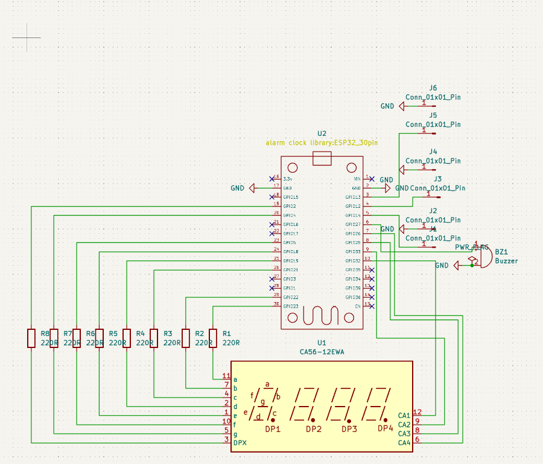
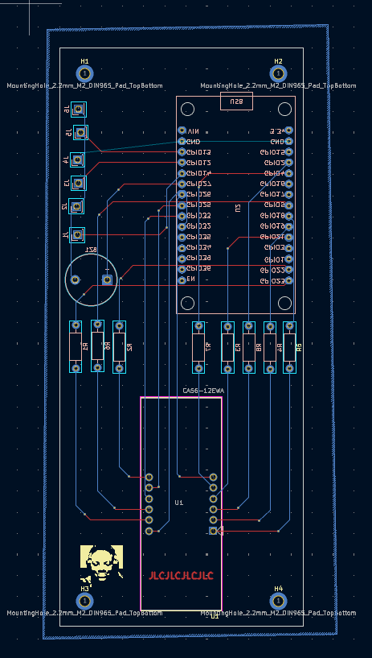

Alarm Clock PCB
Personal Project
CAD PreviewDrag to rotate · scroll to zoom
Schematic and PCB


The Design
An ESP32 alarm clock that displays the time on a four-digit, seven-segment display and sounds an alarm through a passive buzzer.
Design Process
- Drew the circuit schematic in KiCad.
- Selected and organized component footprints on a compact PCB.
- Programmed the ESP32 using the Arduino IDE.
Results and Skills
Reduced the size of the original prototype by 33% by arranging the components on a PCB.
- KiCad schematic and PCB design
- Component footprint selection
- Arduino IDE and microcontroller integration